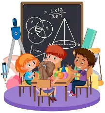

Las figuras tridimensionales, también llamadas sólidos geométricos o cuerpos geométricos, son aquellas que ocupan un lugar en el espacio y tienen tres dimensiones: largo, ancho y altura.
A diferencia de las figuras planas (como el cuadrado o el triángulo), las figuras tridimensionales tienen volumen, es decir, pueden contener o llenar espacio.
Estas figuras permiten representar objetos del mundo real, como cajas, pelotas, botellas, edificios, conos de tránsito, cubos de hielo, etc.